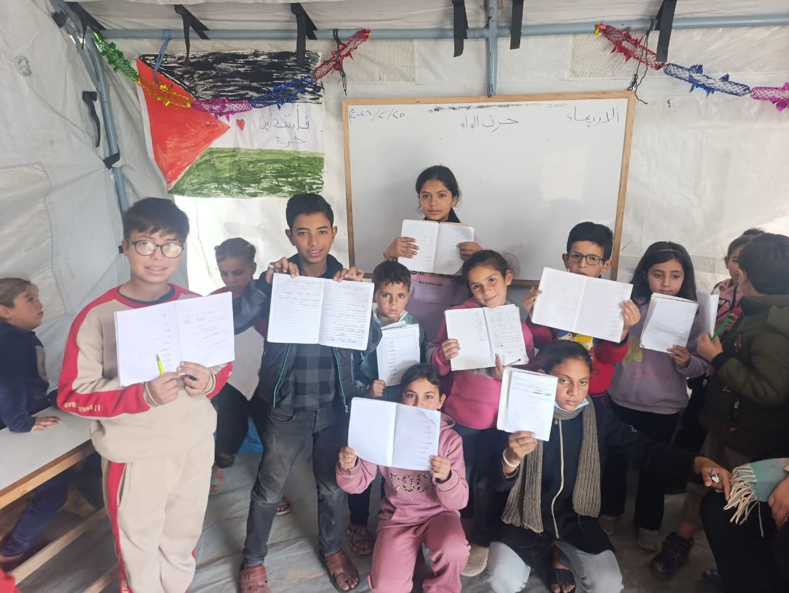
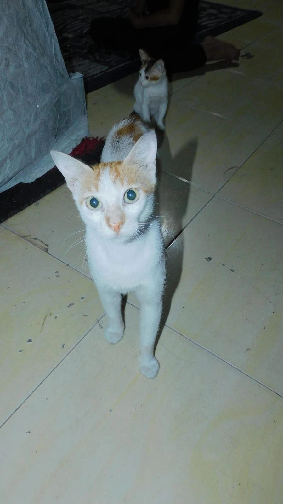

Gemeinsam ist man stark.
Dar Al-Rahma begleitet und unterstützt bestehende Hilfsprojekte vor Ort und verbindet sie miteinander – für Menschen und Tiere in Not.
Projekte unterstützen Projekte im NetzwerkDas Netzwerk auf einen Blick
Medizinische Hilfe, Bildung für Kinder und Tierschutz – eigenständige Projekte in Nord-Gaza, die wir begleiten, unterstützen und miteinander verbinden. Einfach eine Kachel antippen.
 Projekt im Netzwerk
Projekt im NetzwerkMedical Point North Gaza
Notfallversorgung in einer Notunterkunft in Beit Lahia.
→
Projekt im NetzwerkKids4Hope
140 Waisenkinder lernen im Schulzelt.
→ Die Lage
Die LageNicht nur Bomben kosten Leben
Seuchen, Abwasser, fehlende Medikamente.
→
Projekt im NetzwerkCat Rescue
Rettung und Pflege von Katzen aus den Trümmern.
→ Die Lage
Die LageZahlen & Fakten
Gaza in nüchternen Zahlen – mit Quellen.
→ Warum dort
Warum dortWarum Nord-Gaza
Dort kommt am wenigsten Hilfe an.
→ Über uns
Über unsWir sind das Netzwerk
Begleiten, unterstützen, verbinden.
→ Frankfurt · 2027Charity Gala
Kultur, Begegnung und Hilfe an einem Abend.
→ MitmachenSo kannst du helfen
Spenden, mitmachen, Kontakte teilen – jede Hilfe zählt.
→Jedes Leben ist ein Stern.
Für jedes Kind, jeden Menschen und jedes Tier in Gaza, dem geholfen wird. Tippe in den Himmel und zünde einen Stern der Hoffnung an.
0 Sterne der Hoffnung hast du angezündet.
Gemeinsam ist man stark
„Dar Al-Rahma“ heißt „Haus der Barmherzigkeit“. Wir gründen keine Projekte von oben – wir stärken die, die Menschen vor Ort längst tragen.
Was das Netzwerk leistetSichtbarkeit, Spendenwege, Verbindung
- Jedes Projekt bleibt eigenständig – mit eigenem Namen, Logo und eigener Leitung vor Ort.
- Wir sorgen für Sichtbarkeit, Spendenwege und Verbindung zwischen den Projekten.
- So teilen die Projekte Wissen, Kontakte und Unterstützung, statt jedes für sich zu kämpfen.
Wie wir arbeitenVor Ort · transparent · unabhängig
Mit den Menschen vor Ort: Jedes Projekt hat seine eigene Leitung in Gaza. Wir hören zu und entscheiden gemeinsam, was am dringendsten gebraucht wird.
Transparent: Vier-Augen-Prinzip, Belege und Berichte. Mehr dazu
Unabhängig: Menschlichkeit, Unparteilichkeit, Neutralität – Hilfe richtet sich allein nach der Not.
Warum wir das tunBarmherzigkeit kennt keine Grenze
Barmherzigkeit soll nicht an einer Grenze aufhören – nicht zwischen Ländern, nicht zwischen Menschen und Tieren. Hilfe ist für uns ein Kreislauf zwischen Inland und Ausland, Mensch und Tier, Geben und Nehmen. Unser Leitbild
Gemeinnützige UG in GründungDamit die Hilfe verlässlich bleibt
Bisher tragen Privatpersonen die Projekte. Damit die Hilfe dauerhaft und nachvollziehbar wird, bereiten wir die Gründung einer gemeinnützigen UG vor. Stand der Gründung